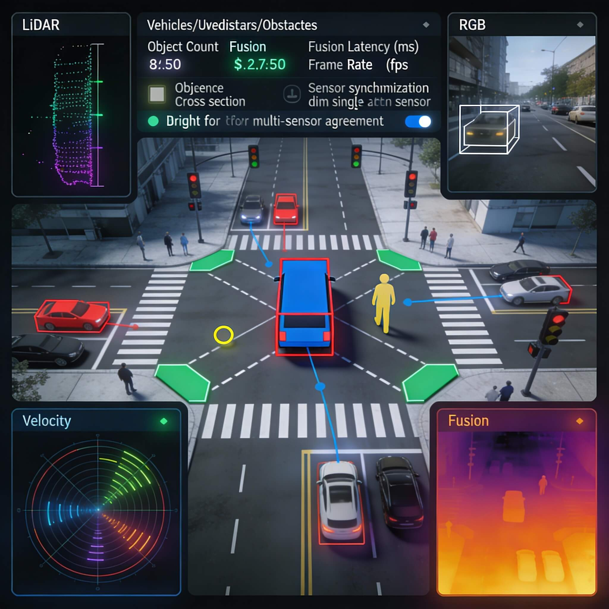
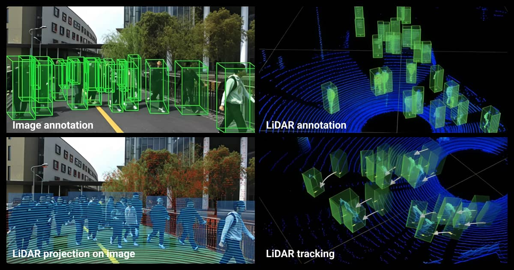

About Me
I am a results-driven Finance professional with experience in front office, back office, customer care, and accounts operations. I am skilled in credit appraisal, loan processing, risk assessment, and maintaining high-quality loan portfolios. I am proficient in accounts payable and receivables, bank reconciliation, account support, client onboarding, and resolving customer issues professionally.
I possess strong analytical skills supported by proficiency in data analysis, Microsoft Office, and training in Six Sigma and cloud technologies. I am experienced in delivering excellent customer service, enhancing operational efficiency, and ensuring compliance with financial procedures.
Key Competencies & Skills
Work Experience
Vision Fund Kenya — Relationship Officer
- Promoted products and services to existing and new customers.
- Analyzed clients’ financial status, credit histories, cash flows, and collateral to assess risk.
- Evaluated applicants’ business financial statements to make informed recommendations.
- Collected, verified, and maintained proper credit documentation.
- Facilitated loan disbursement in line with company policies.
- Prepared timely financial reports and updated credit records accurately.
- Maintained up-to-date records of applications, approvals, and payments.
Digital Divide Data — Quality Assurance Auditor
- I Completed assignments using multiple reference guides and operating procedures.
- Participated in projects of Generative AI, Computer Vision, Agentic AI, Content services and digitization, including autonomous vehicles, warehouse and delivery robotics, generative AI.
- Recommended solutions for tasks outside defined processes and procedures.
- Audited tasks daily to ensure accuracy and compliance.
- Reviewed and annotated medium-risk audios, videos, texts, and images according to predefined descriptions.
- Contributed to improved quality and reduced failure rates before final client delivery.
Wakenya Pamoja SACCO — Accounting Associate
- Processed deposits, withdrawals, and balance inquiries accurately.
- Managed accounts payable and receivable.
- Performed bank reconciliations and ledger reconciliations.
- Reconciled daily transactions and resolved discrepancies.
- Prepared journal entries and supported monthly closing processes.
- Assisted in budgeting, financial analysis, and forecasting.
- Maintained books of accounts.
Portfolio Projects
Loan Appraisal and Credit Risk Review
Example of professional experience in analyzing financial status, cash flows, collateral, and credit history to support lending decisions and portfolio quality.
Accounts Reconciliation and Reporting Support
Experience in managing reconciliations, resolving discrepancies, maintaining accurate records, and supporting routine financial reporting and closing processes.
Quality Assurance and Process Accuracy
Work in auditing operational tasks, ensuring compliance with procedures, identifying exceptions, and improving output quality before client delivery.



Education
Bachelor of Science in Finance
Diploma in Banking and Finance - Credit
Academic foundation in finance, banking operations, and credit-related practice.
Professional Trainings & Workshops
Referees
Contact
Name: Dancan Ombati Amenya
Location: Nairobi, Kenya
Phone: +254-719280602
Email: dancan.amenya64@gmail.com